Day 1 Thursday 12 November
The first night: the house gets its face, the forest is replaced, and day one fails on real feet
13 pictures 9 failures 11 min read
How the night is run
The developer went to bed at half past ten and will play the game when he wakes. Until then eight agents work in one copy of the project, each on its own files: the house, the grounds, the Director, the game's rules, the light and the frame rate, the objects the player lifts, a verifier, and this log. The verifier changes nothing. It builds the game, plays it, photographs it, and writes every fault it finds on a board for the agent that owns the part. Most of what is wrong below was found that way.
The house: from a white box to a mansion
At twenty to nine the outside of the house was plain white render with windows cut into it. The outside is built by the game from the same room plan as the inside, so the fix was more plan: a stone plinth, dressed corners, flat pilasters, a band between the floors, a cornice, a frame, sill and hood for every window, a porch with piers and two steps, three dormers that open into the attic, two chimney stacks with pots, gutters and downpipes. The materials got damp that rises from the ground, stained render and sandstone; the roof is a slate surface from Poly Haven (CC0). It took from five to nine to twenty to ten.

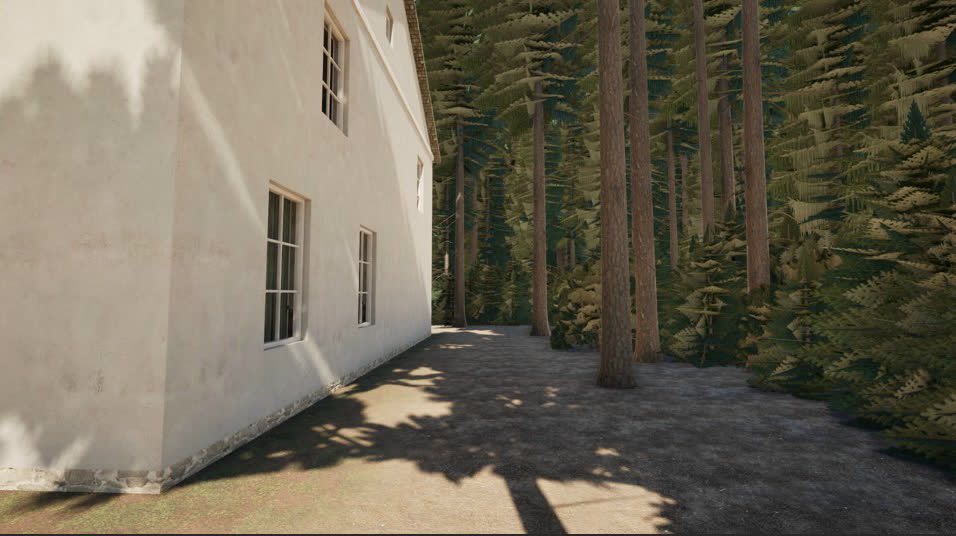
Before 20:39: white render and holes for windows.

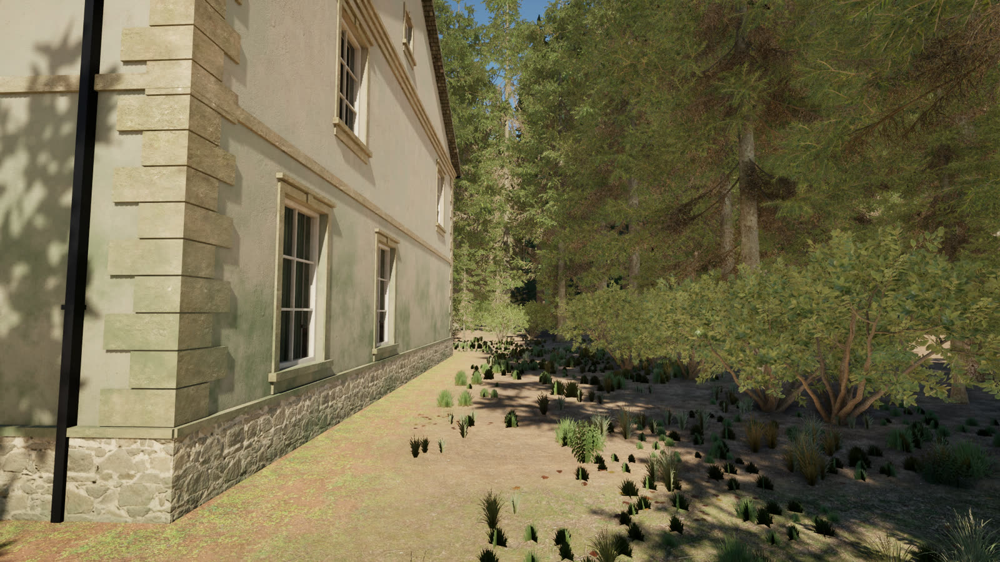
After 22:15: quoins, plinth, window frames, downpipe, damp.
There is no ivy. The agent found no way to make ivy here that would look real, and left it out rather than add something that looks fake.

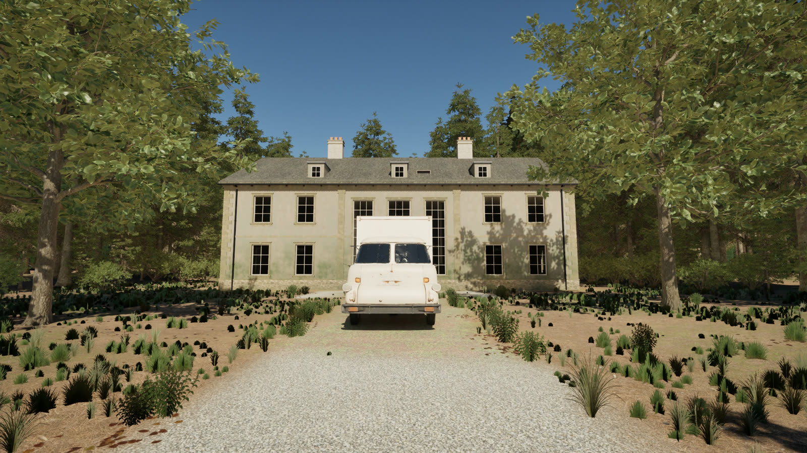
The forest: the engine's own trees
The developer's verdict on the first forest was that it was not as real as he had imagined. Its trees were ours: a trunk with a bark surface and flat cards of branches made from pictures. The engine ships a tool for growing plants, with four ready trees and plants: a conifer, a leafy tree, a shrub and a small plant, all moving in the engine's own wind. They are the engine's content, so they are listed as sourced. The trial took forty minutes; by ten past ten the whole forest was made of them.

Before Earlier in the evening: our own trees, cards of branches.

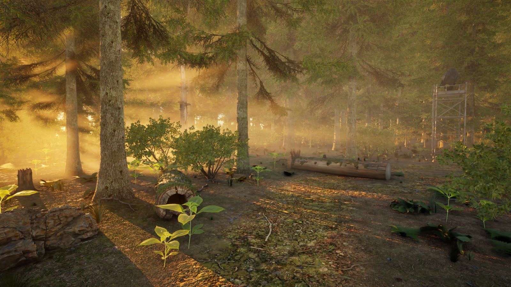
After 22:12: the engine's conifers and shrubs, fallen trunks, low sun through the mist.
They cost frame time. On the development PC (one RTX 5090, 1920 by 1080) the card forest ran at 235 to 308 frames a second; the new one at 107 to 202. A thousand conifers ran no slower than fifty, so it is the kind of tree that costs, not the number. The figure on a mid-range card has not been measured yet, and that is the one that matters.
The hut, from a rack to a hut
The first "hut" was a firewood rack a metre and a half wide. The new one began as a picture from the image model:

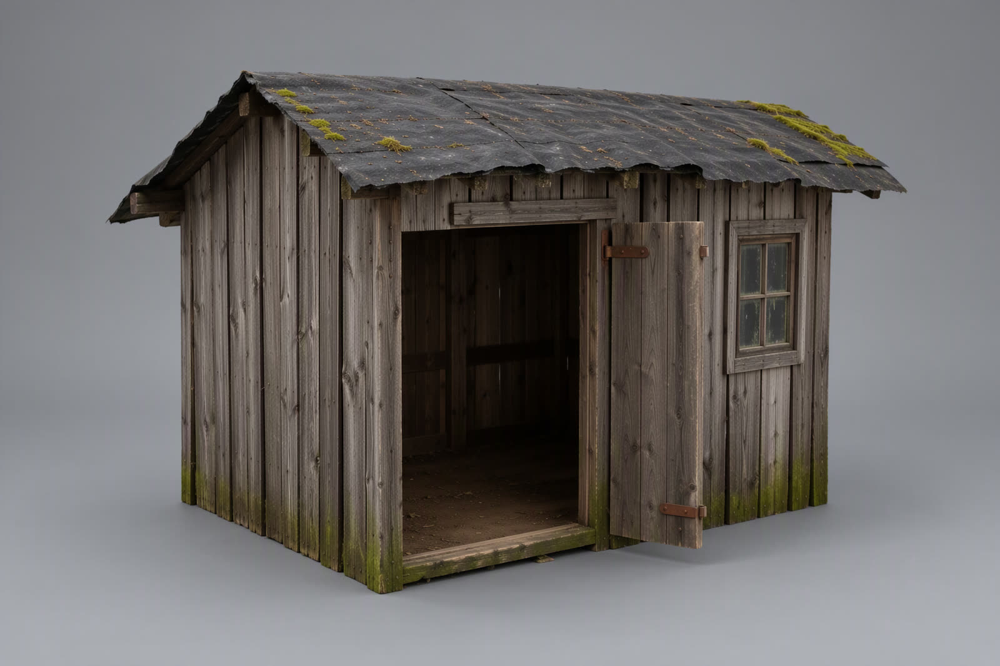
PromptA small old wood hut from a northern forest, shown as a single object, about three metres wide, two and a half metres deep and two and a…203 words
A small old wood hut from a northern forest, shown as a single object, about three metres wide, two and a half metres deep and two and a half metres tall: walls of rough vertical boards weathered silver-grey with dark gaps between them and green algae near the ground, a low sagging ridge roof covered with old black tarred roofing felt, torn at one edge, with moss on it, the whole hut leaning slightly to one side. In the front wall a wide doorway without a threshold, its plank door on rusty strap hinges hanging wide open to the outside, and through the doorway the inside is seen: completely empty, dark, bare board walls and a bare earth floor. In the side wall one small square window with four dirty panes. Nothing stands in or around the hut. Centred, the whole object in frame with clear space around it, three-quarter view from slightly above, on a seamless plain mid-grey studio background, soft even diffuse studio lighting from all sides, no cast shadow on the background, no other objects, no people, photorealistic product photograph, sharp from front to back. No text, no letters, no numbers, no logos, no brand names, no labels, no markings.
Rodin made the model from that picture (300,000 faces). The stacked wood inside, the sawhorse and the chopping block are separate models.

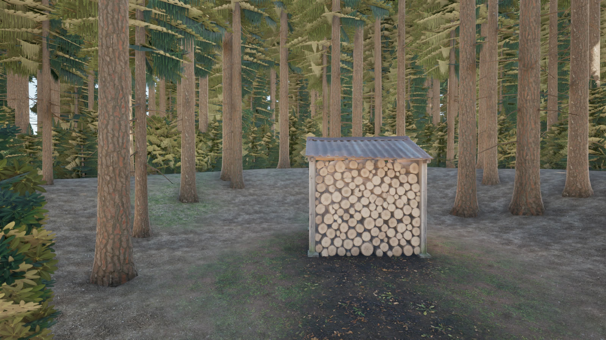
Before 21:35: a firewood rack, not a hut.

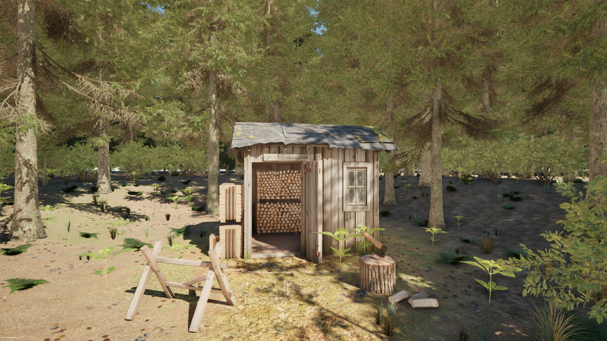
After 22:11: a hut one can walk into, the wood inside.
The Director: his look
He began as a picture. With the fast settings the image model gave fine gaunt old men in the right clothes, but every face was an ordinary living face, whatever the prompt said. At its full settings it gave the dead face below. The prompt asked for empty hollows where the eyes are; the model gave deep eyes in black shadow, which was kept.

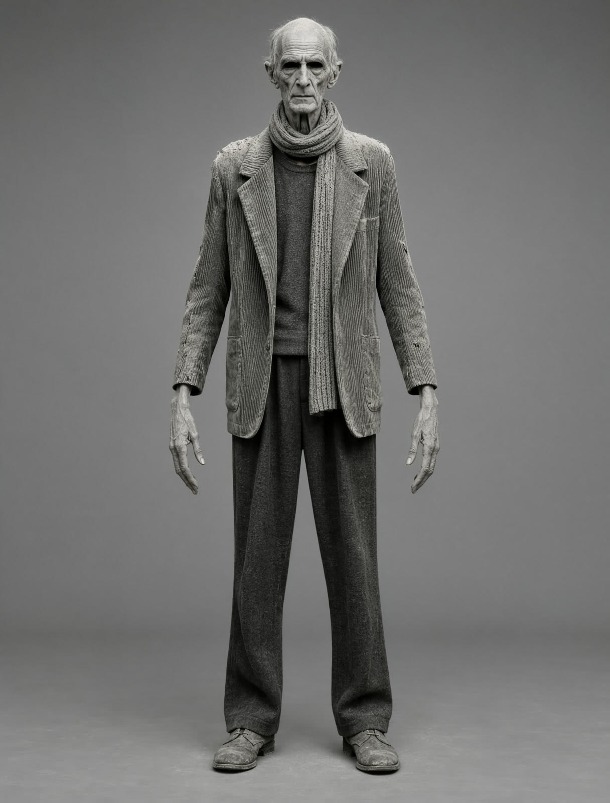
PromptA dead old man with no eyes. Where his eyes should be there are only two deep, empty, black hollows full of shadow: no eyeballs, no…349 words
A dead old man with no eyes. Where his eyes should be there are only two deep, empty, black hollows full of shadow: no eyeballs, no eyelids, nothing in them but darkness. His face is long, grey and dry as old paper, sunken at the cheeks and temples, the skin drawn tight over the cheekbones, the lips shrunk to a thin closed line, a few wisps of colourless hair on a bald head. He has been dead for fifty years and is covered in pale grey dust; nothing about him is bloody or torn. Full-length studio photograph, a creature and costume reference for a serious horror film: a very tall, painfully thin man of about seventy, nearly two metres tall, narrow sloping shoulders, a long thin neck, long thin arms, very long bony hands with long thin fingers. He is the grey of an old black-and-white film from head to foot. He stands upright in an A-pose for 3D scanning, facing the camera squarely: both arms straight and angled out from the body at forty-five degrees, hands well away from the hips, both hands empty and open with all five fingers straight and spread apart, legs straight and apart at shoulder width. He wears a 1970s corduroy jacket with wide lapels, unbuttoned, faded to dusty grey and threadbare at the elbows, a long knitted wool scarf wound once round his neck with one end hanging down his chest, a dark grey roll-neck jumper, loose dark grey wool trousers, worn dusty leather lace-up shoes. Dust lies on his shoulders and the top of his head. Front view, exactly straight on, long lens, no perspective distortion, the whole figure in frame from the top of his head to the soles of his shoes, centred. Seamless plain mid-grey studio floor and background, soft even diffuse lighting from all sides, only a faint contact shadow under the shoes. Photorealistic, sharp from head to feet. Nothing in his hands, no props, no other people, no hat, no glasses. No blood, no wounds, no bare bone, no teeth showing. No text, no letters, no logos.
The story says his face is wrong, smeared, as if he moved while his picture was taken. A script of our own dragged the face sideways in the picture, and Rodin was given both, the smeared one and the plain one.
Rodin also rigged him: 88 bones and ten walking, idling and running clips from its own catalogue (listed as sourced). The clapperboard is a model made by a script of ours; the chalk on it is drawn by the game, so it always shows the day and take you are on.

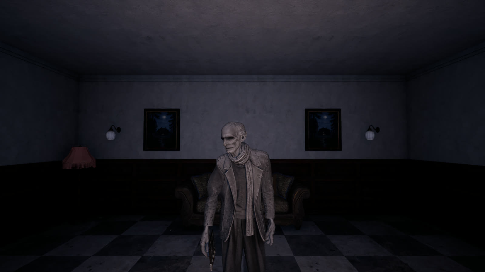
The Director: how he moves
Rodin's clips are a start, not his walk. The game puts his pose together itself, every frame: clips blended by speed, a stoop, the head turning to look before the body follows, the hips dropping, both hands and both feet reaching for where they must be. The catalogue has no clip for turning on the spot, so the turn is made in code, with feet that are lifted and planted, not slid.

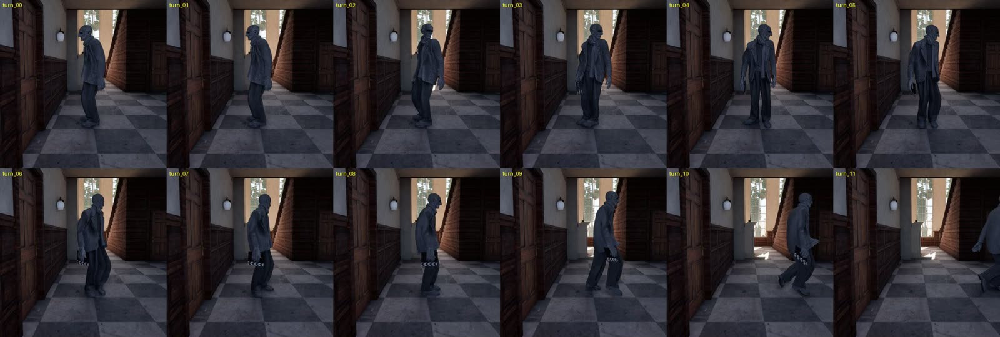
When he reaches you, the view is turned to him and the clapperboard comes up between his face and yours, chalked with the next take, and snaps shut.

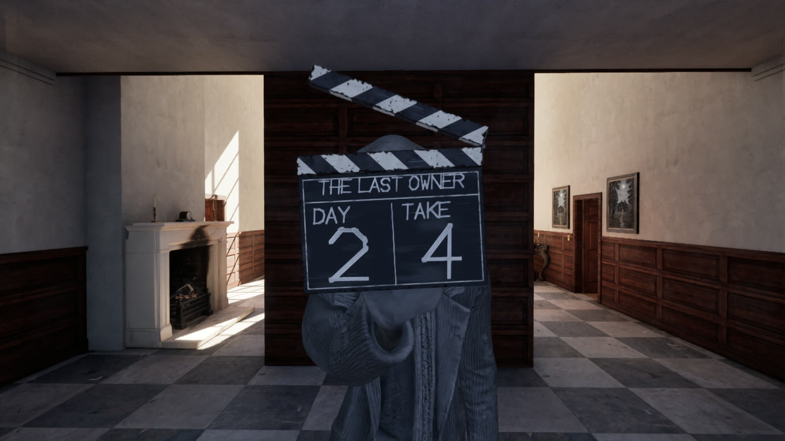
Day one, played by a machine
There are two automatons in the game. The first moves the buyer straight to each thing and plays the day's rules: it cleared day one in 85 seconds, six things sold and eight burned. That proves the rules, not the game. The second walks on the buyer's own feet, at his speed, through the real doors, and does what a player would.

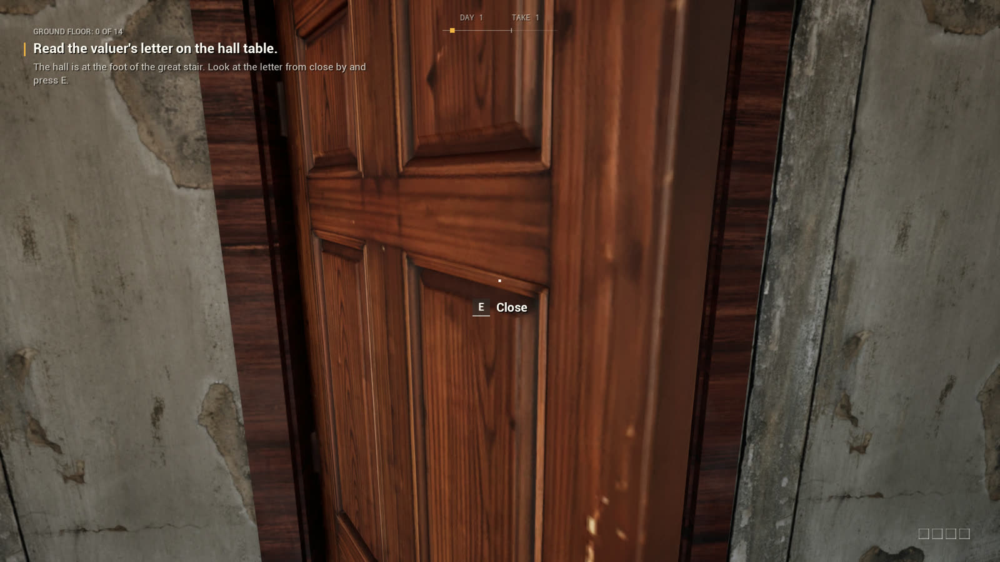
That is the most important finding of the night so far. The game looks closer to the pictures the developer asked for than it did at ten; it does not yet play.
Next
The door, the hiding, and the Director's distance after a death, then the walking automaton again until it reaches bed. The light and frame-rate agent is trying the engine's hardware ray tracing, and NVIDIA's ray reconstruction and frame generation, measuring what each costs. The objects agent is remaking the things the player lifts, one by one, to look real at arm's length. The next entry follows in about two hours.